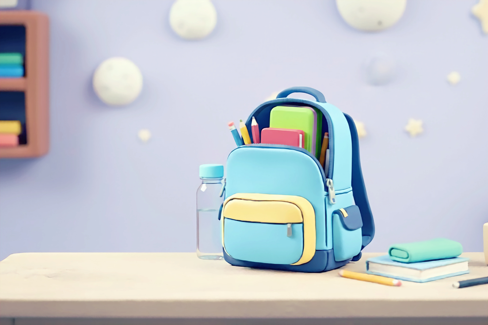
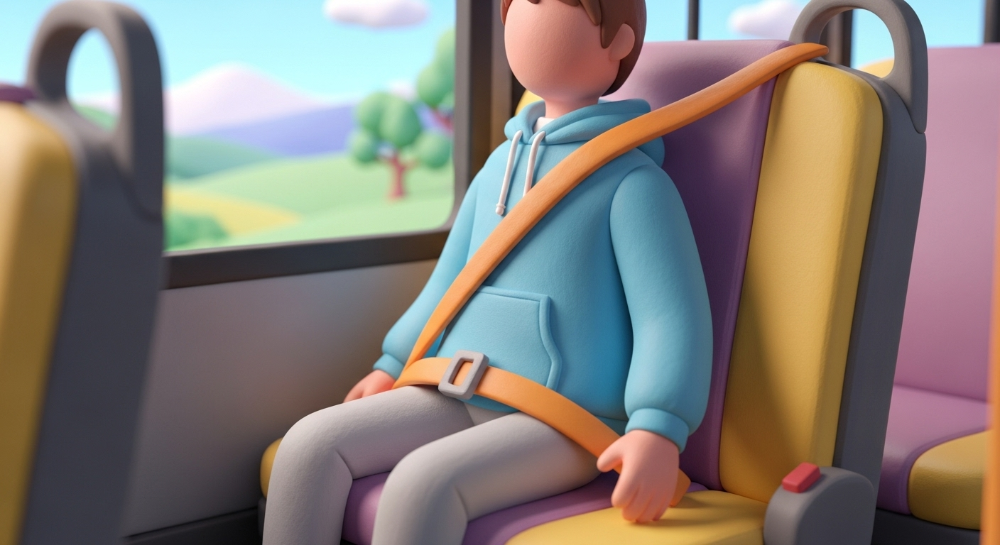

체험학습 안전 수칙
모두의 안전하고 즐거운 체험학습을 위해 꼭 지켜주세요!

1. 학교 출발 전
- 운동화, 긴 바지와 편한 옷차림
- 준비물 확인하기 (도시락, 물병 잊지 마세요)
- 시간에 맞추어 등교하고 늦게 되면 선생님께 연락하기
- 버스 탑승 전 화장실 미리 다녀오기
- 멀미하는 경우 미리 멀미약 복용
2. 도보 이동 시
- 선생님 지시에 따라 두 줄 혹은 한 줄로 이동
- 앞사람과 적절한 간격 유지하기
- 인솔 선생님 지시에 따르고 혼자 행동하지 않기
- 주변 차량을 살피며 교통 안전 주의하기
- 횡단보도 신호 반드시 지키기
- 이동 중 휴대전화 사용 금지

3. 버스 탑승
- 버스 문이 완전히 열린 후 한 줄로 탑승
- 뛰거나 밀지 않고 정해진 좌석에 앉기
- 안전벨트 착용하기
4. 버스 이동 중
- 좌석에서 일어서거나 이동 금지
- 좌석을 발로 차거나 흔들지 않기
- 창문 밖으로 손이나 머리 내밀지 않기
- 떠들거나 장난치지 않기
- 비상구 및 비상 장비 위치 확인
- 물을 제외한 음식물 섭취 금지
5. 버스 하차
- 버스가 완전히 멈춘 뒤 일어서기
- 선생님이 먼저 내린 후 차례대로 내리기
- 하차 후 안전한 곳에 줄 서기
- 버스 주변에서 놀거나 서성이지 않기
6. 체험관 도착 후
- 체험관 선생님 설명에 집중하기
- 개인 소지품은 정해진 곳에 정리하기
- 체험 설명을 끝까지 잘 듣고 체험하기
- 정해진 순서와 규칙 지키기
- 장난치거나 무리한 행동 하지 않기
- 몸이 아프면 즉시 선생님께 알리기
7. 점심시간
- 정해진 시간과 장소 지키기
- 다른 관람객들에게 피해 주지 않기
- 친구에게 돈 빌리지 않기
- 먹고 난 후 주변 정리정돈하기
8. 귀가
- 버스 타기 전 화장실 다녀오기
- 개인 소지품 꼼꼼하게 챙기기
- 학교 도착 후, 내리기 전 소지품 다시 확인